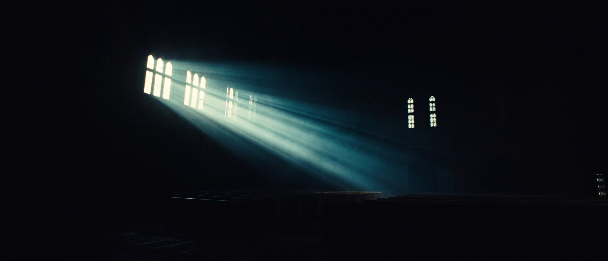
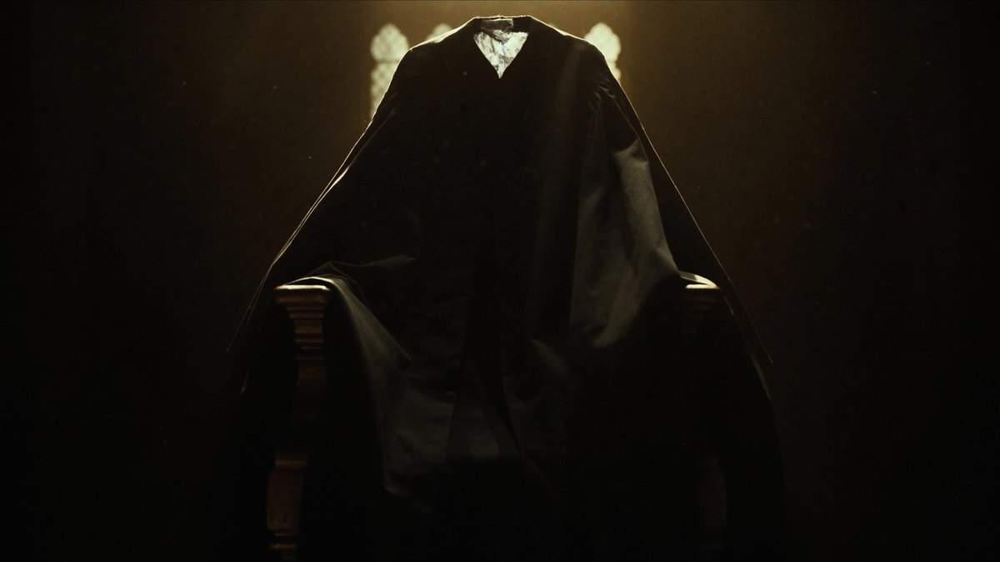
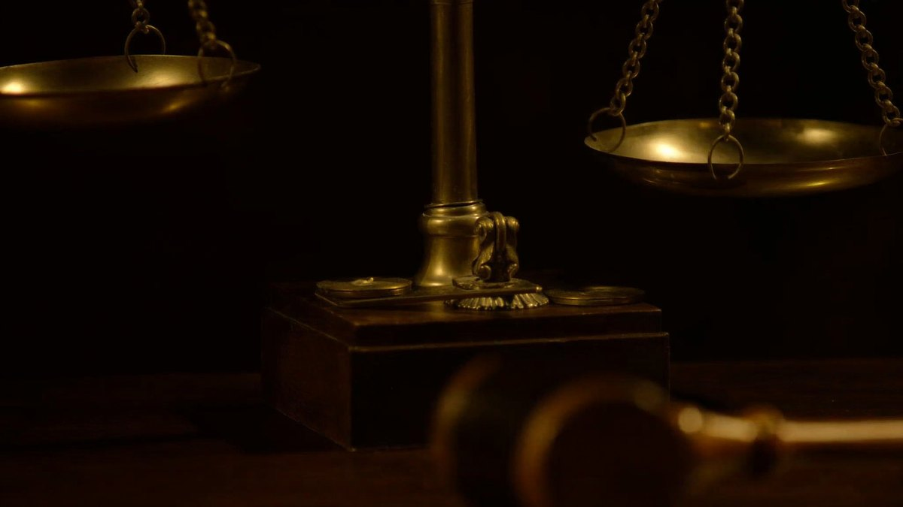
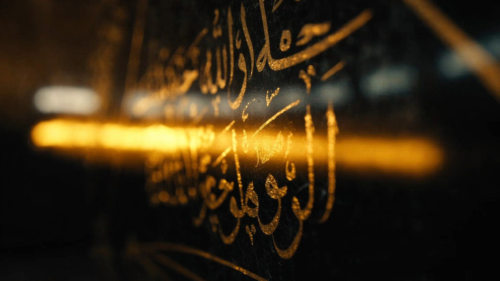
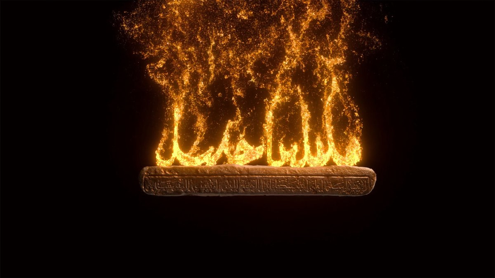
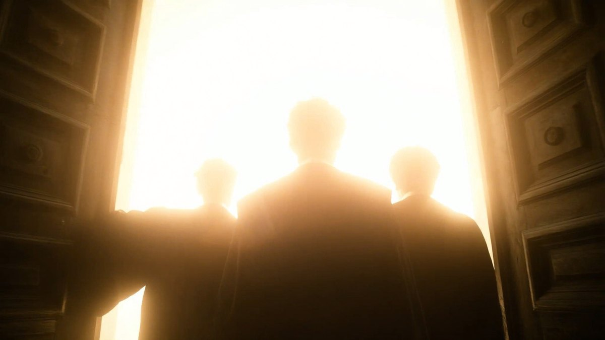
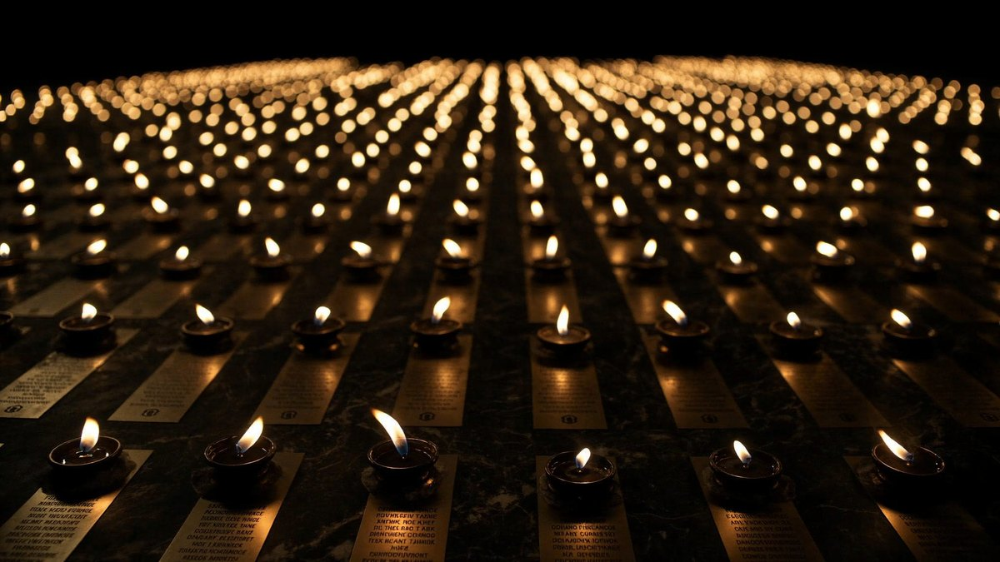
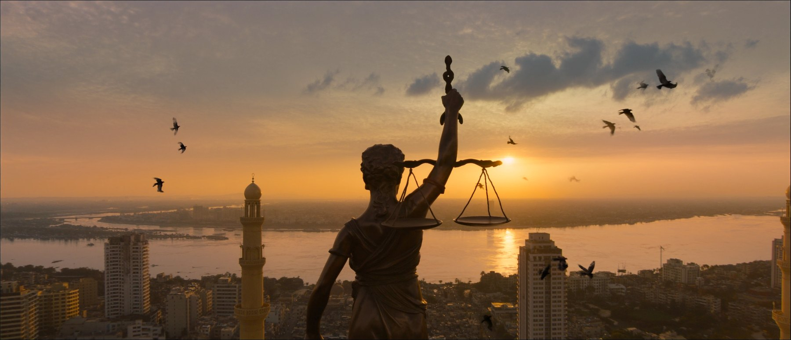

THE ETERNAL ROLL
«رُفعت الجلسة… والشهودُ باقون»
لا أحد يقول «حاضر» في هذا الفيلم. الضوءُ يقولها — شمعةٌ لكل اسم، وصريرُ كرسيٍّ يُسحب برفق، وشعاعٌ يستقرّ على مقعدٍ خالٍ. الذين رحلوا أكثرُ حضوراً من الجدران والمقاعد.

قبل الفجر، في قاعة محكمةٍ فارغة، يتلو منادي المحكمة أسماءَ القضاة الشهداء — فيجيب عن كلِّ اسمٍ النورُ نفسُه: حاضِر.
هذا الفيلم لا يروي الموتَ إطلاقاً.
يقيم طقسَ حضور.
كل معالجة تقليدية للشهداء ستقع في أحد فخّين: التوثيق التلفزيوني الجاف — سِيَرٌ وتواريخ وصور متتالية بتعليق صوتي — أو الميلودراما: موسيقى حزينة فوق وجوه. نحن نقلب المعادلة من جذرها: لا مشهد اغتيال، لا انفجار، لا دمعة مستجداة. شرطُ «أبطالٌ لا ضحايا» يتحقق في بنية الفيلم ذاتها، لا في شعاراته: البطولة هنا ليست ادّعاءً يقوله راوٍ — بل نورٌ يجيب عن نداء.
العمود الفكري كلمةٌ واحدة من لغتنا: «الشهيدُ من الشاهد». القاضي يسمع الشهود كلَّ يوم؛ وهؤلاء القضاة صعدوا هم إلى منصّة الشهادة العليا — شهدوا بأرواحهم للعدالة كلِّها، فصارت شهادتُهم أبديةً لا تُنقَض. فكرةٌ تُشرَح لأي لجنة تحكيم دولية في جملة، وتصيب كلَّ قاضٍ في القاعة في الصميم.
وكلمة «حاضر» لا ينطق بها أحدٌ طوال الفيلم. تُدَّخر لتُقال مرةً واحدة، في الثانية الأخيرة: «حاضرون» — فيهبط العنوانُ على معناه.
وجوه الشهداء لا تُولَّد ولا تُحرَّك ولا تُنطَق بالذكاء الاصطناعي أبداً. بورتريهاتهم الرسمية الحقيقية تُكرَّم كما تُكرَّم الأيقونات: بالضوء وحده — مسحٌ ضوئي يعبر الوجه كفجرٍ يمرّ. في زمن التزييف، ضبطُ النفس هذا بيانٌ فني تتصدّر به لجانَ مهرجانات الذكاء الاصطناعي.
النداء الأخير مصمَّم ليتزامن مع إضاءة قاعة الاحتفالية الحقيقية: البابان ينفتحان على النور في الشاشة — فتُرفَع الأنوار على الجمهور، ويقف الأحياء إجلالاً. الفيلم لا يُعرَض في القاعة؛ الفيلم يحدث فيها.
قبل الفجر بساعة، حين لا يبقى في بغداد إلا نَفَسُ دجلة، يُدفَع بابُ قاعة محكمةٍ عتيقة فيئنّ خشبُها أنينَ من يستيقظ من حلمٍ طويل. يدخل رجلٌ مسنٌّ وحده: منادي المحكمة منذ أربعين عاماً، حافظُ طقوسها وخُطاها. يقدح عودَ ثقاب فتتفتّح الشعلةُ كزهرةٍ ذهبية، ويفتح سجلاً جلدياً محفوراً عليه ميزانُ العدالة، فيصعد الغبارُ في عمود الضوء كأنه درب التبّانة. يقف في القاعة الفارغة ويتلو صيغة الافتتاح كما تُتلى كل صباح: «باسم الشعب… انعقدت الجلسة». ثم يبدأ ما جاء لأجله: المناداة.
«القاضي قيس هاشم محمد الشمري». صمتٌ. ثلاثُ ثوانٍ يسمع فيها المرءُ نبضَه. على المنصّة، استكانُ شايٍ يتصاعد بخارُه كأن صاحبه غادر قبل لحظة. ثم يجيب النور: شعاعُ فجرٍ أول يهبط من النافذة العالية وينساب حتى يستقرّ على مقعده الخالي — ومن قلب العتمة يطلع وجهُه، بورتريهه الحقيقي على سواده المهيب، كأنّ الضوء يمسح على جبينه. لا أحد يقول «حاضر». الضوءُ يقولها.
اسمٌ بعد اسم يتقدّم النداء، ولكل شهيدٍ أثرُه الحميم وجوابُه الضوئي: نظّارتا قراءةٍ متقابلتان وصفحةُ حكمٍ بقلمين لرفيقَي محكمة التمييز — شعاعان توأمان من نافذتين، وشمعتان تشتعلان معاً؛ وكتابُ قانونٍ مفتوحٌ يضيئه ميزانٌ من نور رسمه الشباك لقاضي نينوى؛ وقصبُ أهوار ميسان فجراً — يدٌ تقطع قصبةً — لقاضي العمارة الذي حارب سموم العصر. والقاعة التي بدأت ليلاً أزرق تتحول، نداءً فنداءً، إلى فجرٍ ذهبي.
وفي منتصف الطريق يعبر الفيلم جسرَه الأعمق: قطعُ مطابقةٍ من شعلة القنديل إلى شعلةِ سراجٍ طينيٍّ قبل أربعة آلاف عام. يدُ كاتبٍ سومريٍّ تضغط قلمَ القصب في الطين الرطب، وهمسةٌ كالنَّفَس: di-til-la — «القضيةُ اكتملت» — الكلمة التي افتُتحت بها أقدمُ المحاضر القضائية على وجه الأرض، هنا، في هذه الأرض. تتوهّج المسماريةُ كالجمر، ويسري وهجُها عبر آلاف الأعوام حتى يستقرّ تحت حبر الأسماء العربية في السجلّ: القانون وُلد هنا، وحُرّاسه ما زالوا يولدون هنا.
ثم يبلغ المنادي منصّةَ الشهود فيتوقف، ويقول جملته الوحيدة الخارجة عن الطقس: «في لغتنا… الشهيدُ من الشاهد». يرتفع في المنصّة عمودُ غبارٍ مضيء كوقفةِ من يؤدي القسم، وكفّتا الميزان النحاسي تهتزان اهتزازةً خفيفة… ثم تتّزنان تماماً.
وعند النداء الأخير يرفع المنادي بصرَه عن السجل نحو البابين الكبيرين: «شهداءُ القضاء العراقي… جميعاً». ضربةُ دفٍّ واحدة — الأولى والوحيدة في الفيلم — وينفتح البابان على ضوءٍ أبيضَ ذهبيٍّ يتدفق كنهر، وتعبر الكاميرا نحوه. آخر ما نراه: صفُّ شموعٍ مشتعلة على امتداد المنصّة يقطع حافةَ الكادر ويمتد خارجها — شموعٌ لا يحصيها العدّ، ومكانٌ لكل اسمٍ سيُضاف.
الزمن الدرامي فجرٌ واحد متصل: تبدأ القاعة ليلاً بالأزرق البروسي وتكتمل نهاراً ذهبياً — الضوءُ نفسُه يقيس تقدّم السرد. المدة: ٥ دقائق، موقع واحد، شخصية واحدة، ولا كاميرا محمولة إطلاقاً.
عتمة تامة، قدحُ كبريت، قنديل نحاسي، ثم اتساع الكادر على قاعةٍ شاسعة في زرقة ما قبل الفجر. المنادي يفتح السجل ويتلو صيغة الافتتاح على قاعةٍ خالية — ليست فارغة، بل منتظِرة.
وحدات المناداة، وحدةٌ لكل شهيد: الاسم → صمتٌ تام → أثرٌ حميم يُضاء → جوابُ النور → البورتريه الحقيقي → توهّج الاسم في السجل. القاعة تتحول من ليلٍ أزرق إلى فجرٍ عنبري.
جسر أور: شعلتان بينهما أربعة آلاف عام، ويدُ الكاتب تنقش أول حكمٍ في التاريخ — «دي-تيلّا». ثم ذروة المعنى عند منصّة الشهود: «الشهيدُ من الشاهد» — والميزان يتّزن.
«شهداءُ القضاء العراقي… جميعاً» — ضربة دفٍّ واحدة، البابان ينفتحان على النور، وأنوار قاعة الاحتفالية تُضاء فيقف الحضور. ثم صفّ الشموع الممتد خارج الكادر، و«حاضرون».
١ الاسم يُتلى بصيغة الجلسة الرسمية وألقابها الكاملة ⟵
٢ ثلاثُ ثوانٍ من الصمت التام — توقيع الفيلم الصوتي ⟵
٣ أثرٌ حميم يُضاء: شايٌ يتصاعد، نظّارتان، كتابُ قانون ⟵
٤ جوابُ النور — مختلفٌ لكل اسم: شعاع، شمعة، كفّة ميزان تلتقط لهباً ⟵
٥ البورتريه الحقيقي يطلع من العتمة بمسحٍ ضوئي ⟵
٦ الاسم يتوهج في السجل — جمرٌ مسماريّ تحت الحبر.
وحدة ٢٥–٣٠ ثانية، قابلة للتكرار لأي عددٍ من الأسماء دون كسر الإيقاع — التكرار نفسه يتحول من نمطٍ إلى طقسٍ يزداد مهابة.
هذه الأسماء الخمسة هي المؤكدة لدينا حتى تاريخ هذا الملف، والقائمة الرسمية الكاملة تُعتمد من مجلس القضاء الأعلى قبل التسجيل. بنية «وحدات النداء» تستوعب أي عدد: حتى سبع وحداتٍ كاملة، وما زاد يُكرَّم في النداء الجماعي الأخير وتُكتب أسماؤهم نوراً في خاتمة الفيلم — لكل اسمٍ شمعةٌ ومكان.
البورتريهات المعتمدة من المجلس — على خلفياتها السوداء المهيبة — تدخل نسيج الفيلم بلا أثر تركيب، لأن لوحة الفيلم كلها عتمةٌ ولهب: معالجة 2.5D خفيفة، مسحٌ ضوئي كفجرٍ يمرّ على الوجه، وذرات ذهبٍ تتنفس حولهم. الملامح لا تتحرك أبداً.






أول صورة في الفيلم ولادةُ نور: ماكرو 100مم بتصوير بطيء 120 إطاراً لرأس عود الثقاب يتفتّح لهباً كزهرةٍ ذهبية على سوادٍ مطلق. اليدُ يدُ رجلٍ مسنّ عروقُها أنهارٌ صغيرة، تُدني اللهبَ من قنديلٍ نحاسي فينسكب ضوءُه العسلي على سجلٍّ جلديٍّ محفورٍ عليه الميزان. قدحةُ الكبريت وحدها في صمتٍ كامل، ثم نَفَسُ اللهب.
المنادي يقرأ الاسم بإيقاعٍ ترتيلي ثم يرفع عينيه. صمتُ ثلاث ثوانٍ — لا شيء إلا نبض القاعة. ثم شعاع الفجر الأول يهبط من النافذة العالية قاطعاً الزرقة، وينساب على خشب المنصّة حتى يستقرّ على المقعد الخالي. قطعٌ إلى سواد: البورتريه الحقيقي يطلع من العتمة بمسحٍ ضوئي يعبر الوجه كفجرٍ يمرّ. صوت: صريرُ كرسيٍّ يُسحب برفق — كأنّ صاحبه جلس — ونغمةُ نايٍ واحدة تجيب بدل «حاضر».
ماكرو للهب القنديل يملأ الكادر، ثم قطعُ مطابقةٍ إلى لهبٍ مطابق في سراجٍ طيني — والجدران صارت طيناً وفي العمق ظلُّ زقّورة. يدُ كاتبٍ سومري (يدان فقط، بلا وجوه) تنقش الأوتاد، وهمسة: «دي-تيلّا». يتوهج المسماريُّ كالجمر ويسري وهجُه عبر عتمةٍ من جسيمات الضوء حتى يستقرّ تحت حبر الأسماء في السجل. رسالة كاملة بلا كلمة شرح: القانون وُلد هنا.
المنادي يتوقف أمام المنصّة الفارغة ويقول جملته الوحيدة الخارجة عن الطقس: «في لغتنا… الشهيدُ من الشاهد». دفعةُ دخولٍ بطيئة: عمودٌ من الغبار المضيء يقف في المنصّة قامةً من نور — لا شبح ولا تجسيد، غبارٌ يتنفس في شعاع. في مقدمة الكادر كفّتا الميزان تهتزان اهتزازةً خفيفة ثم تتّزنان تماماً. أطول صمتٍ في الفيلم.
المنادي يغلق السجل — صوتُ إغلاقه كخاتمة آية — ويلتفت نحو البابين العظيمين: «شهداءُ القضاء العراقي… جميعاً». ضربةُ دفٍّ واحدة — الأولى والوحيدة في الفيلم — والبابان ينفتحان على ضوءٍ أبيض ذهبي يتدفق كنهر. دخولٌ محوري بطيء نحو الضوء وعبره، والعدسة تمتلئ فليراً أنامورفياً — وفي هذه الثانية بالضبط تُضاء أنوار قاعة الاحتفالية الحقيقية، فيقف الأحياءُ إجلالاً.
لقطة ثابتة متناظرة للمنصّة في ذهب الفجر الكامل: صفُّ شموعٍ مشتعلة يقطع حافة الكادر ويمتد خارجها بلا نهاية مرئية. ماكرو أخير للسجل: تحت الأسماء سطرٌ فارغ يتوهج ويخبو كجمرة — القائمة مفتوحة، والنور لا يُغلَق عدُّه. «رُفعت الجلسة… والشهودُ باقون». ثم أسماء الشهداء تُكتب نوراً، وهمسة: «حاضرون».
لا أحد يقول «حاضر» في هذا الفيلم. الضوءُ يقولها — شمعةٌ لكل اسم، وصريرُ كرسيٍّ يُسحب برفق، وشعاعٌ يستقرّ على مقعدٍ خالٍ. الذين رحلوا أكثرُ حضوراً من الجدران والمقاعد.
الضوء بطلُ الفيلم وممثّله الثاني: مصدرٌ وحيد لكل مشهد — قنديل، نافذة عالية، شمعة — وعتماتٌ دافئة أبداً، لا سواد ميت. رحلة لونية واحدة تقيس الزمن: من الأزرق البروسي العميق إلى عنبر الشموع فذهب الفجر الكامل. نسبة 2.39:1 أنامورفية، تكوينات متناظرة مهيبة، وحركة كاميرا هيراطيقية: دفعات دخولٍ بطيئة وصعودات بيدستال — الثباتُ وقار. وملمسٌ عراقي أصيل: ظلال الشناشيل المخرّمة، نحاس الميزان، جلد السجل المتشقق.
أساسُ الفيلم صمتٌ مُصمَّم —
بعد كل اسمٍ ثلاثُ ثوانٍ يسمع فيها الجمهورُ أنفاسَه.
الآلات قليلة ومقصودة: تشيللو منفرد خفيض (نبض الوقار)، نايٌ عراقي يجيب عن الأسماء بنغمةٍ واحدة بدل الأصوات البشرية، سنطور نادر اللمسات كقطرات ضوء، ودرونٌ وتري عميق تحت مشهد أور. لا إيقاع البتة طوال الفيلم حتى لحظةٍ واحدة: ضربةُ دفٍّ كبيرة يتيمة عند انفتاح البابين.
الخاتمة على مقام الحجاز — مقام الفجر والمهابة — يصعد مع الضوء ويستقرّ على نغمةٍ ممدودة واحدة. وأذانُ فجرٍ بعيد جداً في الافتتاح (ثانيتان، كالذكرى) — حضورٌ روحيّ محترمٌ غير مباشر، يُعرض على العميل للموافقة المسبقة.
وقوسٌ صوتي يقفل أربعة آلاف عام: صوتُ انغراس قلم القصب في طين أور — هو نفسه، بلا مواربة — صوتُ إغلاق السجل في الخاتمة.
قدحةُ الكبريت، أنينُ الباب العظيم، ورقةٌ تُقلب، لهبٌ يتنفس، سجلٌّ يُغلق كخاتمة آية — وصريرُ كرسيٍّ يُسحب برفق كأنّ صاحبه جلس: أكثر صوتٍ سيبكي القاعة، ولا وجه فيه ولا كلمة.
الصمت لغة الفيلم الثالثة: ثلاثُ ثوانٍ بعد كل اسم — وقوفُ القاعة إجلالاً مسموعاً — وأطول صمتٍ عند اتزان الميزان في منصّة الشهود. حتى الدفّ يصمت قبل كل بورتريه.
نقرةُ قلبٍ واحدة… وأنفاسُ طيور الفجر تدخل القاعة — الحياة تعود إليها لأن أهلها حاضرون.
بناء قاعة المحكمة العراقية بتفاصيلها (شناشيل، نحاس، خشب داكن) كـ«موقعٍ رقمي» موحّد، وcharacter sheet صارم متعدد الزوايا للمنادي المسنّ — مع تفضيلٍ منهجي للقطات الظهر والجانب واليدين.
توليد إطارات كل لقطة بدرجة اللون النهائية (كما في هذا الملف)، واختبارٌ مبكر لمعالجة بورتريه واحد يُعرض على المجلس قبل تعميم المعالجة على الجميع.
لقطات ٥–١٠ ثوانٍ بـSeedance 2.0 (أو 2.5 فور صدوره): ضوء وملمس وحركة بطيئة — منطقة الأمان القصوى للتوليد. توهّج الأسماء في السجل يُركَّب موشن غرافيكس فوق اللقطات لضمان سلامة الخط العربي حرفاً حرفاً.
تسجيل صوت المنادي بأداءٍ ترتيلي، الموسيقى الأصلية، الفوليه الحميم — ثم بروفة تايم-كود كاملة مع فريق قاعة الاحتفالية قبل الحفل بـ٤٨ ساعة لمزامنة كسر الشاشة، مع نسخةٍ تكتمل ذاتياً إن تعذّر.
· وجوه الشهداء لا تُولَّد ولا تُحرَّك ولا تُنطَق — الضوء وحده يتحرك حولها
· أسماء الشهداء وألقابهم ومحاكمهم وسنواتهم تُعتمد حرفياً من القائمة الرسمية قبل تسجيل الأداء — الخطأ في اسم شهيدٍ لا يُغتفر
· صيغ الجلسات القضائية تُراجَع مع مستشارٍ من المجلس
· لا سياسة، لا دم، لا ذكر قتلة — البطولة وحدها تُروى
نسخة الاحتفالية: كسر الشاشة — البابان ينفتحان وتُضاء أنوار القاعة الحقيقية فيقف الحضور.
نسخة المهرجانات: تنتهي على صفّ الشموع الممتد وماكرو السطر المتوهج غير المكتمل وهمسة «حاضرون» — الفيلم يعمل بكامل قوته خارج القاعة أيضاً.

نموذجٌ عالمي لاستخدام الذكاء الاصطناعي في التكريم لا التزييف: بورتريهات حقيقية داخل نسيجٍ مولَّد، وميثاقُ شرفٍ معلن. قضية الساعة في مهرجانات AI — ونحن نجيب عنها بفيلم.
موقع واحد، شخصية واحدة، بطولة للضوء والملمس والحركة البطيئة — بالضبط ما تتقنه أدوات التوليد اليوم. قيود التقنية تحولت إلى أسلوبٍ هيراطيقي متعمَّد.
«من الأرض التي كتبت أول قانونٍ في التاريخ، فيلمٌ عن قضاةٍ كتبوا شهادتهم بأرواحهم.» — خصوصية عراقية بعمقٍ كوني، لا تحتاج شرحاً في أي لغة.